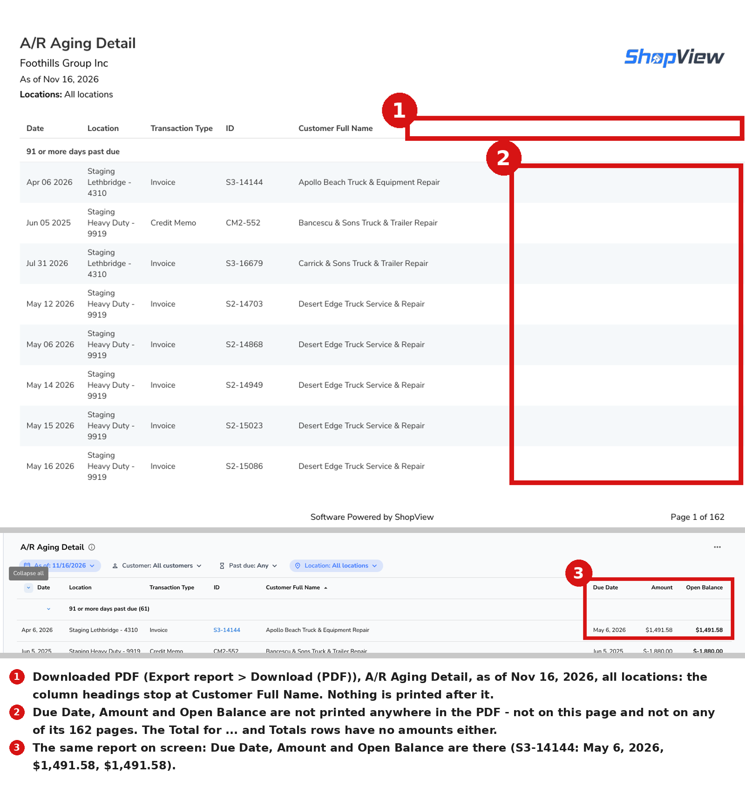

What is wrong. The downloaded PDF of A/R Aging Detail has no Due Date, Amount or Open Balance column. The money is simply not in the file: no row, no "Total for …" line and no Totals line shows an amount. The same happens on the A/P Aging Detail and A/P Unpaid Invoices PDFs (Amount and Open Balance missing), and on the A/R Aging Collection PDF when one location is chosen. The screen and the CSV are fine.
Example. Staging Heavy Duty - 9919, A/R Aging Detail, As of 11/16/2026, all locations. On screen the Totals row reads $773,664.78 (Amount) and $743,791.80 (Open Balance), and invoice S3-14144 shows Due Date May 6, 2026, Amount $1,491.58, Open Balance $1,491.58. In the downloaded PDF (162 pages) the columns stop at Customer Full Name: S3-14144 has no due date and no amounts, and the whole file contains no dollar amount at all (0 of the $773,664.78 / $743,791.80 is printed).
Where to look. Only the PDF from the "⋯" Export report menu. It happens when the report contains a customer or vendor whose name is one very long word with no spaces (staging has several, for example "ZZAUTOTESTAbcdefghij…", 120 letters). With an ordinary name the same PDF prints every column. The A/R and A/P Aging Summary PDFs have the same problem and are already reported in SV-12831.
Actual: the PDF headings end at Customer Full Name (A/P: at Past Due). Due Date, Amount and Open Balance (A/P: Amount and Open Balance) are not printed anywhere.
Expected: every column prints on the page, as on screen, and the long name wraps inside its own column.
PRD "A/R and A/P Report Sorting, Export and Location Filter" (Confluence 947650561, version 13, 13 Nov 2026), S3-R7b:
"In the A/R Detail, A/R Collection, A/P Detail and A/P Unpaid Invoices PDFs, each bucket, customer or vendor ends with a row that reads "Total for <name>", the same words as the screen, for example "Total for 31-60 days past due" or "Total for Acme Towing", with its Amount and Open Balance. A long name wraps inside that row."
Same PRD, S3-R3: "The PDF and the CSV contain exactly the rows on screen for the chosen as-of date, customer or vendor and locations, in the on-screen sort".
Chris Ward on the Summary PDFs, SV-12831, comment 81407 (14 Nov 2026): "A long customer or vendor name should wrap inside its own column, and every column should always print on the page. Even if names this long are rare, dropping 61-90 Days, 91 And Over and Total off a money report without any warning isn't okay."
Picture: (1) the PDF's column headings stop at Customer Full Name; (2) where Due Date, Amount and Open Balance should be, nothing is printed; (3) the same report on screen with those three columns.
